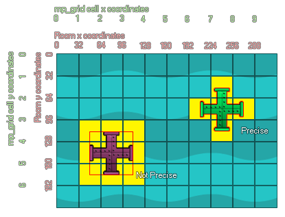

mp_grid_add_instances(id, obj, prec);
| Argument | Description |
|---|---|
| id | Index of the mp_grid that is to be used |
| obj | Object index, or instance id, of the instances to be added into the mp_grid |
| prec | Whether the check is based on pixel-perfect collisions (true = slow) or its bounding box in general (false = fast). |
Returns: N/A
This function uses the instance collision mask (decided by the
sprite properties or the mask index of the calling instance) to
mark cells as forbidden or not, where forbidden cells cannot be
crossed by any of the pathfinding functions. You can specify in the
function whether to consider precise collisions or not and the
forbidden cells marked will change depending on this setting. This
image illustrates this behaviour:

The two instances above have been added into the mp_grid using
the mp_grid_add_instances function with precise being set as true.
As you can see the, green instance has only marked the grid squares
it "touches" as forbidden, due to the fact that its sprite mask is
also set to precise. However the second instance has marked other
cells too which don't appear to be touching. This is because
the sprite mask is not set to precise, meaning that even if
you are using the precise setting in the function, only the
bounding box of the sprite will be considered. This is also what
would happen if you set the precise argument of the function to
false - even instances with a precise sprite mask will be added
into the grid based on their bounding boxes.
mp_grid_add_instances(grid, obj_Wall, 1);
The above code will add all instances of "obj_Wall" into the mp_grid indexed in the variable "grid" using the precise collision mask rather than the bounding box.